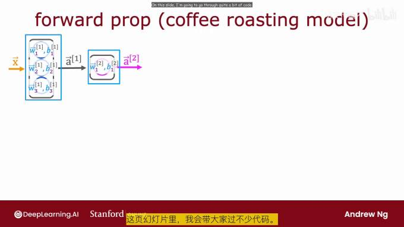

00:03如果必须用 Python 从头实现前向传播，你会怎么做呢？
00:10除了能让你直观地了解像 TensorFlow 和 PyTorch 这类库背后到底在做什么之外，如果将来某天，你决定想构建一些比 TensorFlow 和 PyTorch 更好的东西，也许现在你就更清楚该怎么做了。
00:25我其实并不太建议大多数人这样做，但说不定哪天真的会有人发明出一个比 TensorFlow 和 PyTorch 更优秀的框架。
00:36而那个做到的人，可能最终就得自己从头实现这些东西了。
00:44这页幻灯片里，我会带大家过不少代码。

00:47所有这些代码，你后续在可选实验和练习实验里还会再次看到。
00:54所以不用担心得记下每一行代码，或者背下每一行代码。
00:59你会在实验的 Jupyter 里看到这些代码。
01:04本视频的目标，仅仅是给你过一遍代码，确保你能理解它在做什么，这样当你进入可选实验和练习实验时，看到那些代码，你就明白该怎么做了。
01:17所以，不用费心去逐行做详细笔记。
01:20如果你能读懂这张幻灯片上的代码，理解它在做什么，那就足够了。
01:26那么我们来看看，如何为一个单层网络实现前向传播。
01:32我们继续使用这里展示的咖啡烘焙模型。
01:38来看看你如何接收一个输入特征向量 x，并实现前向传播以获得这个输出 A 二。
01:48在这个 Python 实现里，我将用一维数组来表示所有这些向量和参数，这就是为什么这里只有单层方括号。
01:59这是 Python 中的一维数组，而不是像我们用双层方括号时得到的二维矩阵。
02:08你需要计算的第一个值是 a 上标方括号一下标一，也就是 a 一的第一个激活值，它是这个表达式经过函数作用后的结果。
02:22所以，在这张幻灯片中，我将采用一种约定，比如像 w 二一这样的项，我将表示为变量 w 二，然后下。
02:35这个下划线一就表示下标一。
02:39所以 W 二下划线一，就意味着上标方括号二以及下标一。
02:50我们有参数 W 一和 b 一一，假设它们分别是二、一和负一。
03:01然后你将计算 z 一一，即参数 w—一与输入 x 的点积，最后，aμ等于对 z 一一应用 g 函数，也就是 S 型函数。
03:23接下来，我们继续计算 a 一一，再次说明，按照我在这里描述的约定，它将会被写成那样。
03:34所以和我们左边做过的类似，W 一二是你的两个参数，负三、四。
03:41一二是那边的项一二。
03:45所以你计算出中间这项 z，然后应用 S 型函数，最终得到 a 一二。
03:53最后，你再用同样的步骤计算出 a 一三。
03:59现在你已经算出了这三个值：a 一一、a 一二和 a 一三。
04:07我们想把这三个数组合在一起，形成一个数组，来得到上方的 a 一，也就是第一层的输出。
04:17所以，你可以像下面这样，用 NumPy 数组把它们组合起来实现。
04:23如此，你就计算出了 A 一。
04:26我们也来实现第二层，以计算出输出 A 二。
04:32A 二是用这个表达式算出来的。
04:36那么我们将有参数 W 二一和 B 二一与之对应。
04:44然后，你会计算 Z，即 W 二与 A 一的点积，加上 B 二一，接着应用 S 型函数得到 A 二。
04:56这就是如何仅用 Python 和 NumPy 来实现前向传播。
05:01到目前为止，你刚看到的这页代码里包含了很多表达式。
05:07在接下来的视频里，我们来看看如何简化这个过程，为一个更通用的神经网络实现前向传播，而不是像我们刚才那样为每一个神经元都去硬编码。